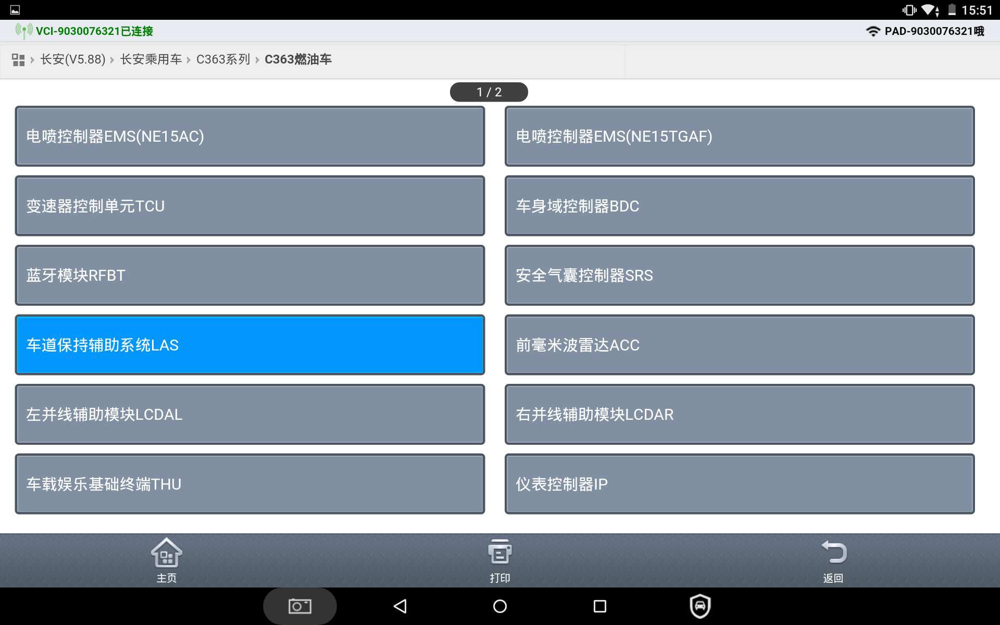
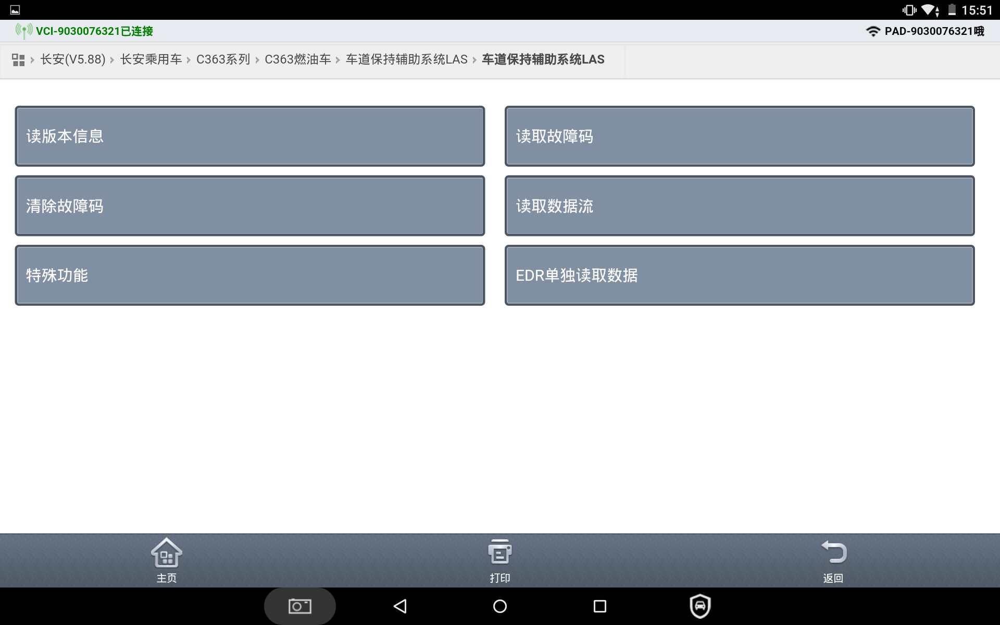
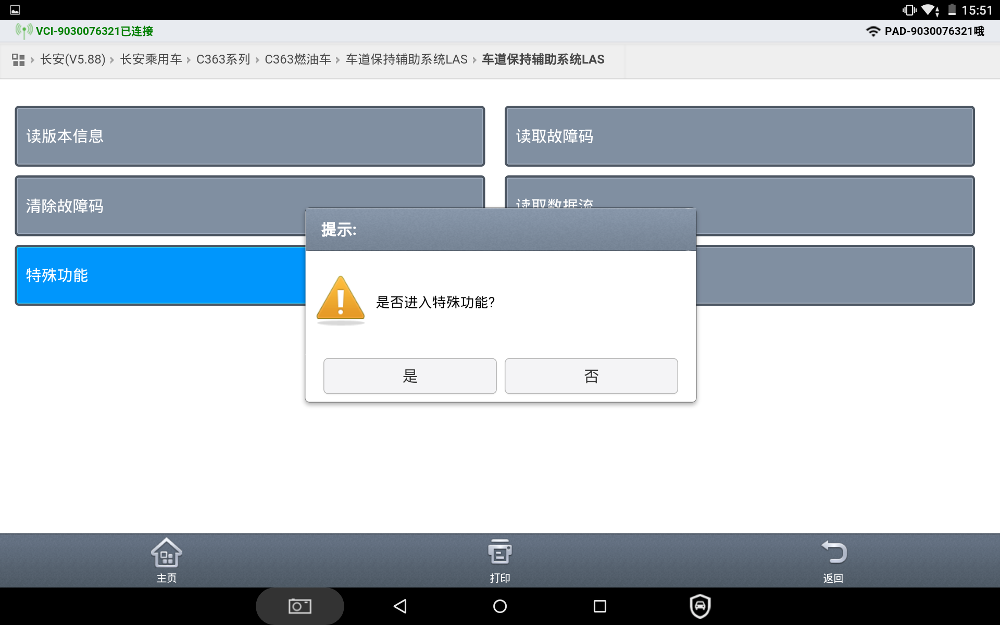
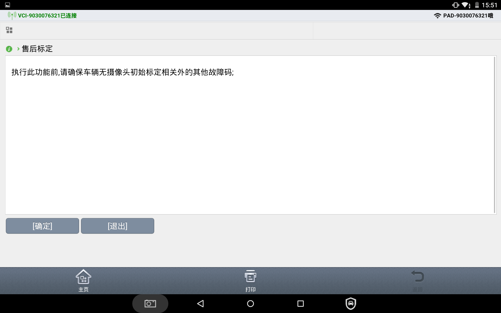
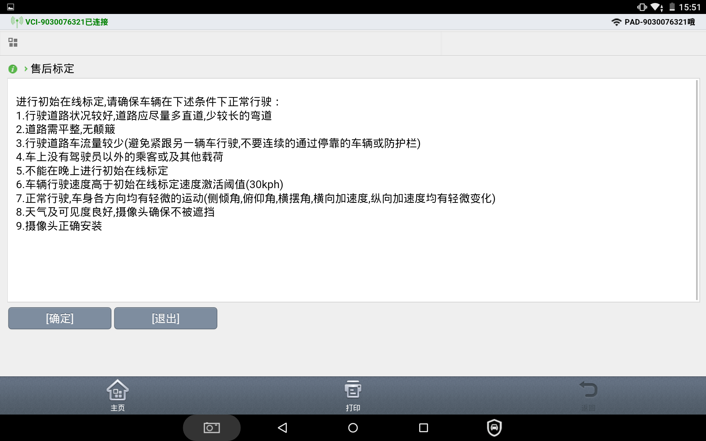
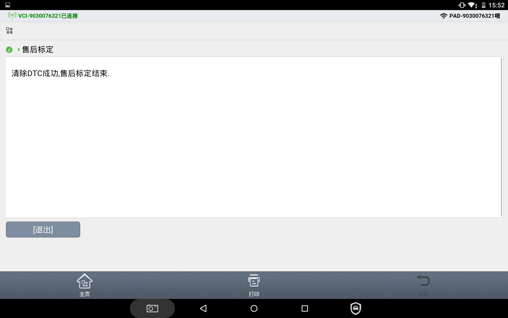

1. Подключить диагностический прибор, запустить двигатель.
Убедиться, что узел контроллера схода с полосы установлен правильно и надежно.
2. Выполнить движение на автомобиле по дороге общего пользования.
Требуется наличие четкой разметки полос с обеих сторон дороги; скорость движения автомобиля должна составлять от 30 km/h до 60 km/h.
3. Запустить послепродажную калибровку схода с полосы.
Перейти в диагностическом приборе в раздел B216 → узел камеры переднего обзора (LAS) → Специальные функции → Послепродажная калибровка → Нажать «Далее» для запуска
Послепродажная калибровка
Во время выполнения операции скорость автомобиля должна находиться в диапазоне от 30 km/h до 60 km/h, в противном случае запуск послепродажной калибровки невозможен.






4. Калибровка
Двигаться посередине полосы со скоростью более 30 km/h в течение примерно 3-5 минут.
На дорожном покрытии должна быть разметка полосы движения; если скорость не соответствует требованиям, калибровка переходит в режим автоматического ожидания и не завершается до тех пор, пока скорость не станет соответствовать требованиям.
5. Завершение калибровки
После завершения калибровки диагностический прибор выдает сообщение об успешном проведении калибровки. С помощью диагностического прибора удалить коды неисправностей, затем считать коды неисправностей повторно — коды неисправностей не откалиброванного датчика должны отсутствовать.
6. Проверка работоспособности
После завершения калибровки перезапустить автомобиль, поддерживать скорость движения выше 65 km/h и плавно смещаться с полосы движения так, чтобы колеса пересекли разметку полосы, при этом должен сработать звуковой сигнал.